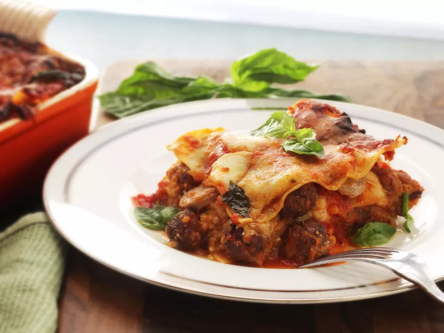

Recipe and Image from Serious Eats
Adjust oven rack to lower-middle position and preheat oven to 300°F. Season ribs with salt and pepper. Heat 2 tablespoons olive oil in a large Dutch oven over high heat until shimmering. Add ribs and cook without moving until well browned, 8 to 10 minutes. Flip and cook until second side is well browned, 5 to 7 minutes longer. Transfer to a plate and set aside.
Add onions to now-empty dutch oven and cook, scraping up any browned bits, and stirring frequently until just beginning to brown, about 6 minutes. Add 8 cloves garlic and continue cooking until onions and garlic are lightly browned, about 3 minutes longer. Add pepper flakes and oregano and cook, stirring, for 30 seconds. Add wine and cook until nearly completely reduced, about 5 minutes.
Add tomatoes, Parmesan rind, and 3/4 of basil. Return ribs to pot and bring to a simmer. Cover with lid slightly ajar and place in the oven. Cook, stirring occasionally, until the rib bones can be easily pulled from the meat, about 3 hours. Add sausages and continue cooking for 30 minutes. Remove pot from oven and increase oven temperature to 375°F.
Transfer ribs to a bowl, discard bones, and let stand until cool enough to handle. Scrape off excess sauce and return it to the pot. Roughly shred rib meat (there should be about 1 1/2 pounds) and transfer to the work bowl of a food processor.
Process until it forms a finely shredded paste, scraping the sides of the processor as necessary. Transfer mixture to a large bowl and season to taste with salt and pepper.
Add bread, eggs, 3 ounces of Parmesan, remaining 4 cloves garlic, and parsley and process until a smooth paste is formed. Transfer to bowl with meat and fold by hand until homogenous
Form mixture into 1/2-inch balls using wet hands. You should end up with about 60 meatballs.
Heat vegetable oil in a 10-inch no-stick or cast iron skillet over high heat until it reaches 350°F. Add as many meatballs fit in a single layer, dropping them in gently one at a time. Cook without moving until well browned on first side, about 1 1/2 minutes. Carefully flip and cook until browned all over (meatballs will be very delicate). Transfer to a paper towel-lined plate and repeat until all the meatballs are cooked.
Combine ricotta with 1 1/2 cups sauce in a medium bowl. Cook lasagna noodles in a large pot of boiling water according to package directions. Drain on clean kitchen towels. If using no-boil noodles, soak in warm water for 30 minutes to partially hydrate.
Remove the sausages from the sauce and slice into thin disks. Butter the bottom and sides of a lasagna pan. Spread 1/5 of red sauce on bottom of pan and top with a layer of lasagna noodles.
Spread 1/3 of ricotta mixture over the noodles, followed by 1/3 of meatballs, 1/3 of sliced sausage, 1/4 of mozzarella, and 1/4 of smoked mozzarella. Top with another 1/5 of red sauce and a generous grating of Parmesan cheese.
Repeat step 11 two more times. You should have used up all the noodles, meatballs, sausage, and ricotta mixture. Top final layer of noodles with remaining sauce and remaining cheeses. Tear up remaining basil leaves and sprinkle over the top. Drizzle with remaining 1 tablespoon olive oil.
Cover tightly with aluminum foil and bake for 30 minutes. Remove foil and continue baking until browned and bubbly, about 20 minutes longer. Remove from oven, allow to rest for 10 minutes, slice, and serve.